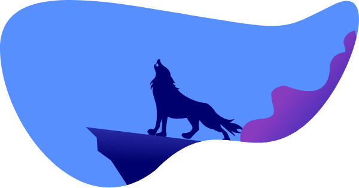
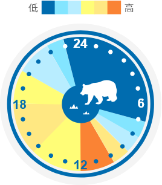
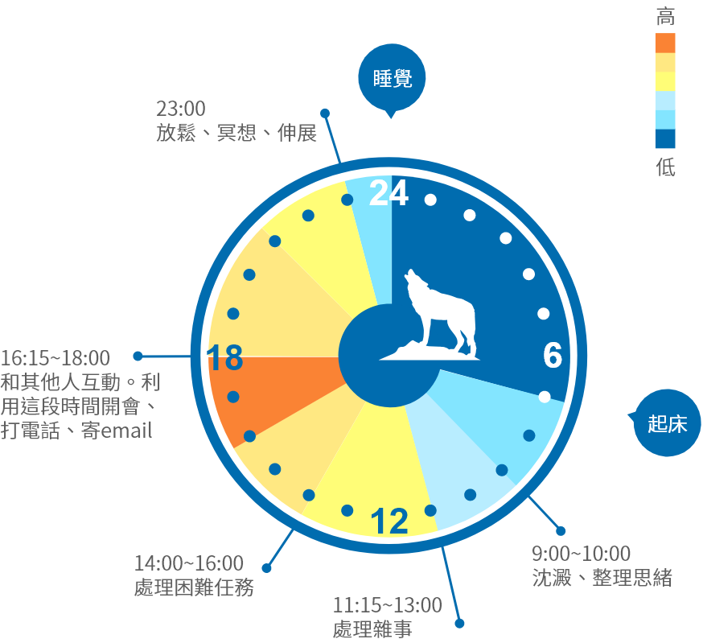

測驗結果
你的生理時鐘是狼型

狼型特色
- ● 占所有人口15%~20%
- ● 早上上班心情煩悶、昏昏沉沉，好幾個小時做不出任何算是有工作效率的事情
- ● 下午五點，這時間大部分人都無精打采，狼型人卻清醒得不得了，腦子動得很快
- ● 由於習慣深夜吃東西，又很難抗拒誘惑，BMI比其他型態的人來得要高
24h典型作息
- 起床情形：
- 7:00~7:30 鬧鐘響的時候我醒來，然後按兩三次貪睡提醒。翻開棉被、開始這一天的時候，彷彿還在作夢。
- 上班情形：
- 8:30~9:00 通勤過程真是一片模糊。彷彿是開車穿過一片大腦的迷霧。
- 9:00~11:00 是一片迷茫，不過正在慢慢散去。我沒辦法專心，於是就喝更多咖啡。我會看看部落格、回電子郵件、和朋友同事聊聊天。
- 11:00 還在努力理清思緒
- 11:15~13:00 好餓啊！中午我都是第一個衝出門覓食的，我會吃上頭有融化的起司的食物。因為沒吃早餐，所以也會吃片餅乾當甜點。
- 14:00~16:00 現在我又累了。午餐時攝取的糖分降下來了？沒什麼是第四杯咖啡治不了的。
- 16:15~18:00 現在我終於感覺很敏銳、馬力全開，但這一天已經快過完了。其他人都在消磨時間等待下班，而我才剛剛開始。我快馬加鞭，彷彿要在兩小時內把一整天的工作做完。
- 下班情形：
- 18:00~19:00 我渾身精力無處發洩——莫非剛剛那壺咖啡拖到現在才見效？我衝回家、匆匆做了晚餐，和孩子一起吃。
- 19:00~20:00 孩子在做自己的事，我先生則往沙發一靠。而我已經準備好要開心一下，正設法邀約一些朋友見面喝點小酒，或是去看電影。
- 21:00~23:00 一邊逛網站、上網聊天，一邊吃個一兩份點心。我可不會去弄蔬菜或水果棒來吃，比較可能是垃圾食品或剩菜。
- 睡眠情形：
- 23:00~00:00 我大概還掛在網上，看個節目或讀上幾篇文章，一邊吃點心。我開始擔心，覺得自己應該趕快上床睡覺，可是又覺得自己無比清醒。
- 00:00 我躺在床上，聽我先生睡覺的呼聲。無法入睡，壓力很大，很擔心明天的狀況。
- 2:30~5:00 應該算是睡著了，這還得感謝我一小時前吃的安眠藥。
- 5:00~7:00 終於，我在不得不起床前徹底熟睡了。
完美工作一天
- 最警醒的時候：晚上7點
- 最有生產力的時候：快中午和深夜
- 
- 
- 6:30 起床，不按貪睡提醒
- 9:30~9:45 喝咖啡
- 10:00~12:00 創意發想時間，寫下日記記靈感、寫下大方向待辦事項
- 13:00~16:00 不睡午覺、不喝咖啡，累了就散散步
- 16:00~18:00 處理困難的事務
- 22：30 關閉所有螢幕，讀書，聊天，泡熱水澡
- 23:30 睡覺
目標
- 1.改善上班時間的效率。
- 2.改變飲食節律以加速新陳代謝。
- 3.每晚多睡幾個小時。
- 4.穩定情緒，好增進整體生活滿意度。